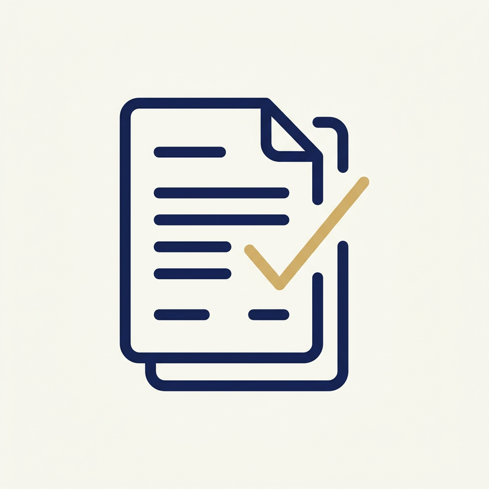

書類が整理されていなくても大丈夫です
どれが必要か分からない場合は、当日一緒に探して確認します。ただし、限られた時間ですべての書類を詳しく確認することはできません。書類が多い場合は、今回整理するものを一緒に選び、残ったものは今後の確認事項としてシートに書いておきます。

目安：A4ファイル1冊または手提げ袋1つ程度（書類30点程度まで）
これを超える場合は、同じ訪問で時間を追加できます（60分追加11,000円／90分追加16,500円）。原本は原則として持ち帰りません。

年金と税金の書類整理サポート
源泉徴収票、医療費の領収書、保険料の控除証明書、ふるさと納税…。バラバラになりがちな書類をご自宅で一緒に集めて整理し、税理士や税務署に相談できる状態に整えます。
ご自宅で、年金や税金に関わる書類を一緒に集め、種類ごとに分けて整理します。何がそろっていて、何が足りないかを一覧にし、税理士や税務署に相談するときに、そのまま持っていける状態に整えます。
税金の計算や、確定申告が必要かどうかの判断はしません。必要な場合は、提携する税理士をご紹介します。
これらをA4・1枚程度の「書類整理シート」にまとめてお渡しします。
まずはメールでお申し込みください。
ご相談内容を確認し、合ったメニューをご案内します。
振込またはクレジットカード決済でお支払いいただきます。
面談日の7日前までにご提出をお願いしています。
札幌市内・隣接エリアへお伺いします。
「書類整理シート」をお渡しします。
シートの送付後、簡単なご質問に1回お答えします。
税金の判断や申告が必要な場合は、提携する税理士をご紹介します（税理士への報酬は、税理士から事前にご案内します）。本人の希望なく、別の契約を進めることはありません。
どれが必要か分からない場合は、当日一緒に探して確認します。ただし、限られた時間ですべての書類を詳しく確認することはできません。書類が多い場合は、今回整理するものを一緒に選び、残ったものは今後の確認事項としてシートに書いておきます。
目安：A4ファイル1冊または手提げ袋1つ程度（書類30点程度まで）
これを超える場合は、同じ訪問で時間を追加できます（60分追加11,000円／90分追加16,500円）。原本は原則として持ち帰りません。
すべてそろっていなくても大丈夫です。どこにあるか分からない書類も、当日一緒に探します。
確定申告の時期（2〜3月）は混み合います。お早めのご相談をおすすめしています。